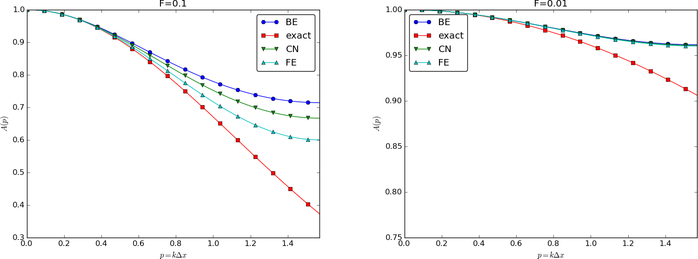

Figure 24: Evolution of the solution of a diffusion problem: initial condition (upper left), 1/100 reduction of the small waves (upper right), 1/10 reduction of the long wave (lower left), and 1/100 reduction of the long wave (lower right).

The famous diffusion equation, also known as the heat equation, reads $$ \frac{\partial u}{\partial t} = \dfc \frac{\partial^2 u}{\partial x^2}, $$ where \( u(x,t) \) is the unknown function to be solved for, \( x \) is a coordinate in space, and \( t \) is time. The coefficient \( \dfc \) is the diffusion coefficient and determines how fast \( u \) changes in time. A quick short form for the diffusion equation is \( u_t = \dfc u_{xx} \).
Compared to the wave equation, \( u_{tt}=c^2u_{xx} \), which looks very similar, but the diffusion equation features solutions that are very different from those of the wave equation. Also, the diffusion equation makes quite different demands to the numerical methods.
Typical diffusion problems may experience rapid change in the very beginning, but then the evolution of \( u \) becomes slower and slower. The solution is usually very smooth, and after some time, one cannot recognize the initial shape of \( u \). This is in sharp contrast to solutions of the wave equation where the initial shape is preserved - the solution is basically a moving initial condition. The standard wave equation \( u_{tt}=c^2u_{xx} \) has solutions that propagates with speed \( c \) forever, without changing shape, while the diffusion equation converges to a stationary solution \( \bar u(x) \) as \( t\rightarrow\infty \). In this limit, \( u_t=0 \), and \( \bar u \) is governed by \( \bar u''(x)=0 \). This stationary limit of the diffusion equation is called the Laplace equation and arises in a very wide range of applications throughout the sciences.
It is possible to solve for \( u(x,t) \) using a explicit scheme, but the time step restrictions soon become much less favorable than for an explicit scheme for the wave equation. And of more importance, since the solution \( u \) of the diffusion equation is very smooth and changes slowly, small time steps are not convenient and not required by accuracy as the diffusion process converges to a stationary state.
To obtain a unique solution of the diffusion equation, or equivalently, to apply numerical methods, we need initial and boundary conditions. The diffusion equation goes with one initial condition \( u(x,0)=I(x) \), where \( I \) is a prescribed function. One boundary condition is required at each point on the boundary, which in 1D means that \( u \) must be known, \( u_x \) must be known, or some combination of them.
We shall start with the simplest boundary condition: \( u=0 \). The complete initial-boundary value diffusion problem in one space dimension can then be specified as $$ \begin{align} \frac{\partial u}{\partial t} &= \dfc \frac{\partial^2 u}{\partial x^2}, \quad x\in (0,L),\ t\in (0,T] \tag{268}\\ u(x,0) &= I(x), \quad x\in [0,L] \tag{269}\\ u(0,t) & = 0, \quad t>0, \tag{270}\\ u(L,t) & = 0, \quad t>0\tp \tag{271} \end{align} $$ Equation (268) is known as a one-dimensional diffusion equation, also often referred to as a heat equation. With only a first-order derivative in time, only one initial condition is needed, while the second-order derivative in space leads to a demand for two boundary conditions. The parameter \( \dfc \) must be given and is referred to as the diffusion coefficient.
Diffusion equations like (268) have a wide range of applications throughout physical, biological, and financial sciences. One of the most common applications is propagation of heat, where \( u(x,t) \) represents the temperature of some substance at point \( x \) and time \( t \).
The first step in the discretization procedure is to replace the domain \( [0,L]\times [0,T] \) by a set of mesh points. Here we apply equally spaced mesh points $$ \begin{equation*} x_i=i\Delta x,\quad i=0,\ldots,N_x,\end{equation*} $$ and $$ \begin{equation*} t_n=n\Delta t,\quad n=0,\ldots,N_t \tp \end{equation*} $$ Moreover, \( u^n_i \) denotes the mesh function that approximates \( u(x_i,t_n) \) for \( i=0,\ldots,N_x \) and \( n=0,\ldots,N_t \). Requiring the PDE (268) to be fulfilled at a mesh point \( (x_i,t_n) \) leads to the equation $$ \begin{equation} \frac{\partial}{\partial t} u(x_i, t_n) = \dfc\frac{\partial^2}{\partial x^2} u(x_i, t_n), \tag{272} \end{equation} $$ The next step is to replace the derivatives by finite difference approximations. The computationally simplest method arises from using a forward difference in time and a central difference in space: $$ \begin{equation} [D_t^+ u = \dfc D_xD_x u]^n_i \tp \tag{273} \end{equation} $$ Written out, $$ \begin{equation} \frac{u^{n+1}_i-u^n_i}{\Delta t} = \dfc \frac{u^{n}_{i+1} - 2u^n_i + u^n_{i-1}}{\Delta x^2} \tp \tag{274} \end{equation} $$ We have turned the PDE into algebraic equations, also often called discrete equations. The key property of the equations is that they are algebraic, which makes them easy to solve. As usual, we anticipate that \( u^n_i \) is already computed such that \( u^{n+1}_i \) is the only unknown in (274). Solving with respect to this unknown is easy: $$ \begin{equation} u^{n+1}_i = u^n_i + F\left( u^{n}_{i+1} - 2u^n_i + u^n_{i-1}\right)\tp \tag{275} \end{equation} $$
Note that \( F \) is a dimensionless number that lumps the key physical parameter in the problem, \( \dfc \), and the discretization parameters \( \Delta x \) and \( \Delta t \) into a single parameter. All the properties of the numerical method are critically dependent upon the value of \( F \) (see the section Analysis of schemes for the diffusion equation for details).
The computational algorithm then becomes
x = linspace(0, L, Nx+1) # mesh points in space
dx = x[1] - x[0]
t = linspace(0, T, Nt+1) # mesh points in time
dt = t[1] - t[0]
F = a*dt/dx**2
u = zeros(Nx+1) # unknown u at new time level
u_1 = zeros(Nx+1) # u at the previous time level
# Set initial condition u(x,0) = I(x)
for i in range(0, Nx+1):
u_1[i] = I(x[i])
for n in range(0, Nt):
# Compute u at inner mesh points
for i in range(1, Nx):
u[i] = u_1[i] + F*(u_1[i-1] - 2*u_1[i] + u_1[i+1])
# Insert boundary conditions
u[0] = 0; u[Nx] = 0
# Update u_1 before next step
u_1[:]= u
The program diffu1D_u0.py
contains a function solver_FE for solving the 1D diffusion equation
with \( u=0 \) on the boundary. The functions plug and gaussian
runs the case with \( I(x) \) as a discontinuous plug or a smooth
Gaussian function, respectively. Experiments with these two functions
reveal some important observations:
We now apply a backward difference in time in (272), but the same central difference in space: $$ \begin{equation} [D_t^- u = D_xD_x u]^n_i, \tag{276} \end{equation} $$ which written out reads $$ \begin{equation} \frac{u^{n}_i-u^{n-1}_i}{\Delta t} = \dfc\frac{u^{n}_{i+1} - 2u^n_i + u^n_{i-1}}{\Delta x^2} \tp \tag{277} \end{equation} $$ Now we assume \( u^{n-1}_i \) is computed, but all quantities at the "new" time level \( n \) are unknown. This time it is not possible to solve with respect to \( u_i^{n} \) because this value couples to its neighbors in space, \( u^n_{i-1} \) and \( u^n_{i+1} \), which are also unknown. Let us examine this fact for the case when \( N_x=3 \). Equation (277) written for \( i=1,\ldots,Nx-1= 1,2 \) becomes $$ \begin{align} \frac{u^{n}_1-u^{n-1}_1}{\Delta t} &= \dfc\frac{u^{n}_{2} - 2u^n_1 + u^n_{0}}{\Delta x^2} \tag{278}\\ \frac{u^{n}_2-u^{n-1}_2}{\Delta t} &= \dfc\frac{u^{n}_{3} - 2u^n_2 + u^n_{1}}{\Delta x^2} \tag{279} \end{align} $$ The boundary values \( u^n_0 \) and \( u^n_3 \) are known as zero. Collecting the unknown new values \( u^n_1 \) and \( u^n_2 \) on the left-hand side gives $$ \begin{align} \left(1+ 2F\right) u^{n}_1 - F u^{n}_{2} &= u^{n-1}_1, \tag{280}\\ - F u^{n}_{1} + \left(1+ 2F\right) u^{n}_2 &= u^{n-1}_2\tp \tag{281} \end{align} $$ This is a coupled \( 2\times 2 \) system of algebraic equations for the unknowns \( u^n_1 \) and \( u^n_2 \). The equivalent matrix form is $$ \left(\begin{array}{cc} 1+ 2F & - F\\ - F & 1+ 2F \end{array}\right) \left(\begin{array}{c} u^{n}_1\\ u^{n}_{2}\\ \end{array}\right) = \left(\begin{array}{c} u^{n-1}_1\\ u^{n-1}_2 \end{array}\right) $$
Discretization methods that lead to a coupled system of equations for the unknown function at a new time level are said to be implicit methods. The counterpart, explicit methods, refers to discretization methods where there is a simple explicit formula for the values of the unknown function at each of the spatial mesh points at the new time level. From an implementational point of view, implicit methods are more comprehensive to code since they require the solution of coupled equations, i.e., a matrix system, at each time level.
In the general case, (277) gives rise to a coupled \( (Nx-1)\times (Nx-1) \) system of algebraic equations for all the unknown \( u^n_i \) at the interior spatial points \( i=1,\ldots,Nx-1 \). Collecting the unknowns on the left-hand side, (277) can be written $$ \begin{equation} - F u^n_{i-1} + \left(1+ 2F \right) u^{n}_i - F u^n_{i+1} = u_{i-1}^{n-1}, \tag{282} \end{equation} $$ for \( i=1,\ldots,Nx-1 \). Here, we have introduced the mesh Fourier number $$ \begin{equation} F = \dfc\frac{\Delta t}{\Delta x^2}\tp \tag{283} \end{equation} $$
One can either view these equations as a system for where the \( u^{n}_i \) values at the internal mesh points, \( i=1,\ldots,N_x-1 \), are unknown, or we may append the boundary values \( u^n_0 \) and \( u^n_{N_x} \) to the system. In the latter case, all \( u^n_i \) for \( i=0,\ldots,N_x \) are unknown and we must add the boundary equations to the \( N_x-1 \) equations in (282): $$ \begin{align} u_0^n &= 0,label{diffu:pde1:step4BE:BC:0}\\ u_{N_x}^n &= 0\tp \tag{285} \end{align} $$
A coupled system of algebraic equations can be written on matrix form, and this is important if we want to call up ready-made software for solving the system. The equations (282) and (284)--(285) correspond to the matrix equation $$ \begin{equation*} AU = b\end{equation*} $$ where \( U=(u^n_0,\ldots,u^n_{N_x}) \), and the matrix \( A \) has the following structure: $$ \begin{equation} A = \left( \begin{array}{cccccccccc} A_{0,0} & A_{0,1} & 0 &\cdots & \cdots & \cdots & \cdots & \cdots & 0 \\ A_{1,0} & A_{1,1} & 0 & \ddots & & & & & \vdots \\ 0 & A_{2,1} & A_{2,2} & A_{2,3} & \ddots & & & & \vdots \\ \vdots & \ddots & & \ddots & \ddots & 0 & & & \vdots \\ \vdots & & \ddots & \ddots & \ddots & \ddots & \ddots & & \vdots \\ \vdots & & & 0 & A_{i,i-1} & A_{i,i} & A_{i,i+1} & \ddots & \vdots \\ \vdots & & & & \ddots & \ddots & \ddots &\ddots & 0 \\ \vdots & & & & &\ddots & \ddots &\ddots & A_{N_x-1,N_x} \\ 0 &\cdots & \cdots &\cdots & \cdots & \cdots & 0 & A_{N_x,N_x-1} & A_{N_x,N_x} \end{array} \right) \tag{286} \end{equation} $$ The nonzero elements are given by $$ \begin{align} A_{i,i-1} &= -F \tag{287}\\ A_{i,i} &= 1+ 2F \tag{288}\\ A_{i,i+1} &= -F \tag{289} \end{align} $$ for the equations for internal points, \( i=1,\ldots,N_x-1 \). The equations for the boundary points correspond to $$ \begin{align} A_{0,0} &= 1, \tag{290}\\ A_{0,1} &= 0, \tag{291}\\ A_{N_x,N_x-1} &= 0, \tag{292}\\ A_{N_x,N_x} &= 1\tp \tag{293} \end{align} $$ The right-hand side \( b \) is written as $$ \begin{equation} b = \left(\begin{array}{c} b_0\\ b_1\\ \vdots\\ b_i\\ \vdots\\ b_{N_x} \end{array}\right) \tag{294} \end{equation} $$ with $$ \begin{align} b_0 &= 0, \tag{295}\\ b_i &= u^{n-1}_i,\quad i=1,\ldots,N_x-1, \tag{296}\\ b_{N_x} &= 0 \tp \tag{297} \end{align} $$
We observe that the matrix \( A \) contains quantities that do not change in time. Therefore, \( A \) can be formed once and for all before we enter the recursive formulas for the time evolution. The right-hand side \( b \), however, must be updated at each time step. This leads to the following computational algorithm, here sketched with Python code:
x = linspace(0, L, Nx+1) # mesh points in space
dx = x[1] - x[0]
t = linspace(0, T, N+1) # mesh points in time
u = zeros(Nx+1) # unknown u at new time level
u_1 = zeros(Nx+1) # u at the previous time level
# Data structures for the linear system
A = zeros((Nx+1, Nx+1))
b = zeros(Nx+1)
for i in range(1, Nx):
A[i,i-1] = -F
A[i,i+1] = -F
A[i,i] = 1 + 2*F
A[0,0] = A[Nx,Nx] = 1
# Set initial condition u(x,0) = I(x)
for i in range(0, Nx+1):
u_1[i] = I(x[i])
import scipy.linalg
for n in range(0, Nt):
# Compute b and solve linear system
for i in range(1, Nx):
b[i] = -u_1[i]
b[0] = b[Nx] = 0
u[:] = scipy.linalg.solve(A, b)
# Update u_1 before next step
u_1[:] = u
We have seen from (286) that the matrix \( A \) is tridiagonal. The code segment above used a full, dense matrix representation of \( A \), which stores a lot of values we know are zero beforehand, and worse, the solution algorithm computes with all these zeros. With \( N_x+1 \) unknowns, the work by the solution algorithm is \( \frac{1}{3} (N_x+1)^3 \) and the storage requirements \( (N_x+1)^2 \). By utilizing the fact that \( A \) is tridiagonal and employing corresponding software tools, the work and storage demands can be proportional to \( N_x \) only.
The key idea is to apply a data structure for a
tridiagonal or sparse matrix. The scipy.sparse package has
relevant utilities. For example, we can store the nonzero diagonals of
a matrix. The package also has linear system solvers that operate on
sparse matrix data structures. The code below illustrates how we
can store only the main diagonal and the upper and lower diagonals.
# Representation of sparse matrix and right-hand side
main = zeros(Nx+1)
lower = zeros(Nx-1)
upper = zeros(Nx-1)
b = zeros(Nx+1)
# Precompute sparse matrix
main[:] = 1 + 2*F
lower[:] = -F #1
upper[:] = -F #1
# Insert boundary conditions
main[0] = 1
main[Nx] = 1
A = scipy.sparse.diags(
diagonals=[main, lower, upper],
offsets=[0, -1, 1], shape=(Nx+1, Nx+1),
format='csr')
print A.todense() # Check that A is correct
# Set initial condition
for i in range(0,Nx+1):
u_1[i] = I(x[i])
for n in range(0, Nt):
b = u_1
b[0] = b[-1] = 0.0 # boundary conditions
u[:] = scipy.sparse.linalg.spsolve(A, b)
u_1[:] = u
scipy.sparse.linalg.spsolve function utilizes the sparse storage
structure of A and performs in this case a very efficient Gaussian
elimination solve.
The program diffu1D_u0.py
contains a function solver_BE, which implements the Backward Euler scheme
sketched above.
As mentioned in the section Forward Euler scheme,
the functions plug and gaussian
runs the case with \( I(x) \) as a discontinuous plug or a smooth
Gaussian function. All experiments point to two characteristic
features of the Backward Euler scheme: 1) it is always stable, and
2) it always gives a smooth, decaying solution.
The idea in the Crank-Nicolson scheme is to apply centered differences in space and time, combined with an average in time. We demand the PDE to be fulfilled at the spatial mesh points, but in between the points in the time mesh: $$ \frac{\partial}{\partial t} u(x_i, t_{n+\half}) = \dfc\frac{\partial^2}{\partial x^2}u(x_i, t_{n+\half}). $$ for \( i=1,\ldots,N_x-1 \) and \( n=0,\ldots, N_t-1 \).
With centered differences in space and time, we get $$ [D_t u = \dfc D_xD_x u]^{n+\half}_i\tp$$ On the right-hand side we get an expression $$ \frac{1}{\Delta x^2}\left(u^{n+\half}_{i-1} - 2u^{n+\half}_i + u^{n+\half}_{i+1}\right)\tp$$ This expression is problematic since \( u^{n+\half}_i \) is not one of the unknown we compute. A possibility is to replace \( u^{n+\half}_i \) by an arithmetic average: $$ u^{n+\half}_i\approx \half\left(u^{n}_i +u^{n+1}_{i}\right)\tp $$ In the compact notation, we can use the arithmetic average notation \( \overline{u}^t \): $$ [D_t u = \dfc D_xD_x \overline{u}^t]^{n+\half}_i\tp$$
After writing out the differences and average, multiplying by \( \Delta t \), and collecting all unknown terms on the left-hand side, we get $$ \begin{equation} u^{n+1}_i - \half F(u^{n+1}_{i-1} - 2u^{n+1}_i + u^{n+1}_{i+1}) = u^{n}_i + \half F(u^{n}_{i-1} - 2u^{n}_i + u^{n}_{i+1})\tp \tag{298} \end{equation} $$
Also here, as in the Backward Euler scheme, the new unknowns \( u^{n+1}_{i-1} \), \( u^{n+1}_{i} \), and \( u^{n+1}_{i+1} \) are coupled in a linear system \( AU=b \), where \( A \) has the same structure as in (286), but with slightly different entries: $$ \begin{align} A_{i,i-1} &= -\half F \tag{299}\\ A_{i,i} &= \half + F \tag{300}\\ A_{i,i+1} &= -\half F \tag{301} \end{align} $$ for the equations for internal points, \( i=1,\ldots,N_x-1 \). The equations for the boundary points correspond to $$ \begin{align} A_{0,0} &= 1, \tag{302}\\ A_{0,1} &= 0, \tag{303}\\ A_{N_x,N_x-1} &= 0, \tag{304}\\ A_{N_x,N_x} &= 1\tp \tag{305} \end{align} $$ The right-hand side \( b \) has entries $$ \begin{align} b_0 &= 0, \tag{306}\\ b_i &= u^{n-1}_i,\quad i=1,\ldots,N_x-1, \tag{307}\\ b_{N_x} &= 0 \tp \tag{308} \end{align} $$
For the equation $$ \frac{\partial u}{\partial t} = G(u),$$ where \( G(u) \) is some a spatial differential operator, the \( \theta \)-rule looks like $$ \frac{u^{n+1}_i - u^n_i}{\Delta t} = \theta G(u^{n+1}_i) + (1-\theta) G(u^{n}_i)\tp$$ The important feature of this time discretization scheme is that we can implement one formula and then generate a family of well-known and widely used schemes:
The Laplace equation, \( \nabla^2 u = 0 \), or the Poisson equation, \( -\nabla^2 u = f \), occur in numerous applications throughout science and engineering. In 1D these equations read \( u''(x)=0 \) and \( -u''(x)=f(x) \), respectively. We can solve 1D variants of the Laplace equations with the listed software, because we can interpret \( u_{xx}=0 \) as the limiting solution of \( u_t = \dfc u_{xx} \) when \( u \) reach a steady state limit where \( u_t\rightarrow 0 \). Similarly, Poisson's equation \( -u_{xx}=f \) arises from solving \( u_t = u_{xx} + f \) and letting \( t\rightarrow \) so \( u_t\rightarrow 0 \).
Technically in a program, we can simulate \( t\rightarrow\infty \) by just taking one large time step, or equivalently, set \( \dfc \) to a large value. All we need is to have \( F \) large. As \( F\rightarrow\infty \), we can from the schemes see that the limiting discrete equation becomes $$ \frac{u^{n+1}_{i+1} - 2u^{n+1}_i + u^{n+1}_{i-1}}{\Delta x^2} = 0,$$ which is nothing but the discretization \( [D_xD_x u]^{n+1}_i=0 \) of \( u_{xx}=0 \).
The Backward Euler scheme can solve the limit equation directly and hence produce a solution of the 1D Laplace equation. With the Forward Euler scheme we must do the time stepping since \( F > 1/2 \) is illegal and leads to instability. We may interpret this time stepping as solving the equation system from \( u_{xx} \) by iterating on a time pseudo time variable.
These extensions are performed exactly as for a wave equation as they only affect the spatial derivatives (which are the same as in the wave equation).
A particular characteristic of diffusive processes, governed by an equation like $$ \begin{equation} u_t = \alpha u_{xx}, \tag{309} \end{equation} $$ is that the initial shape \( u(x,0)=I(x) \) spreads out in space with time, along with a decaying amplitude. Three different examples will illustrate the spreading of \( u \) in space and the decay in time.
The diffusion equation (309) admits solutions that depend on \( \eta = (x-c)/\sqrt{4\alpha t} \) for a given value of \( c \). One particular solution is $$ \begin{equation} u(x,t) = a\,\mbox{erf}(\eta) + b, \tag{310} \end{equation} $$ where $$ \begin{equation} \mbox{erf}(\eta) = \frac{2}{\sqrt{\pi}}\int_0^\eta e^{-\zeta^2}d\zeta, \tag{311} \end{equation} $$ is the error function, and \( a \) and \( b \) are arbitrary constants. The error function lies in \( (-1,1) \), is odd around \( \eta =0 \), and goes relatively quickly to \( \pm 1 \): $$ \begin{align*} \lim_{\eta\rightarrow -\infty}\mbox{erf}(\eta) &=-1,\\ \lim_{\eta\rightarrow \infty}\mbox{erf}(\eta) &=1,\\ \mbox{erf}(\eta) &= -\mbox{erf}(-\eta),\\ \mbox{erf}(0) &=0,\\ \mbox{erf}(2) &=0.99532227,\\ \mbox{erf}(3) &=0.99997791 \tp \end{align*} $$
As \( t\rightarrow 0 \), the error function approaches a step function centered at \( x=c \). For a diffusion problem posed on the unit interval \( [0,1] \), we may choose the step at \( x=1/2 \) (meaning \( c=1/2 \)), \( a=-1/2 \), \( b=1/2 \). Then $$ \begin{equation} u(x,t) = \half\left(1 - \mbox{erf}\left(\frac{x-\half}{\sqrt{4\alpha t}}\right)\right) = \half\mbox{erfc}\left(\frac{x-\half}{\sqrt{4\alpha t}}\right), \tag{312} \end{equation} $$ where we have introduced the complementary error function \( \mbox{erfc}(\eta) = 1-\mbox{erf}(\eta) \). The solution (312) implies the boundary conditions $$ \begin{align} u(0,t) &= \half\left(1 - \mbox{erf}\left(\frac{-1/2}{\sqrt{4\alpha t}}\right)\right), \tag{313} \\ u(1,t) &= \half\left(1 - \mbox{erf}\left(\frac{1/2}{\sqrt{4\alpha t}}\right)\right) \tag{314} \tp \end{align} $$ For small enough \( t \), \( u(0,t)\approx 1 \) and \( u(1,t)\approx 1 \), but as \( t\rightarrow\infty \), \( u(x,t)\rightarrow 1/2 \) on \( [0,1] \).
The standard diffusion equation \( u_t = \alpha u_{xx} \) admits a Gaussian function as solution: $$ \begin{equation} u(x,t) = \frac{1}{\sqrt{4\pi\alpha t}} \exp{\left({-\frac{(x-c)^2}{4\alpha t}}\right)} \tag{315} \tp \end{equation} $$ At \( t=0 \) this is a Dirac delta function, so for computational purposes one must start to view the solution at some time \( t=t_\epsilon>0 \). Replacing \( t \) by \( t_\epsilon +t \) in (315) makes it easy to operate with a (new) \( t \) that starts at \( t=0 \) with an initial condition with a finite width. The important feature of (315) is that the standard deviation \( \sigma \) of a sharp initial Gaussian pulse increases in time according to \( \sigma = \sqrt{2\alpha t} \), making the pulse diffuse and flatten out.
For example, (309) admits a solution of the form $$ \begin{equation} u(x,t) = Qe^{-at}\sin\left( kx\right) \tag{316} \tp \end{equation} $$ The parameters \( Q \) and \( k \) can be freely chosen, while inserting (316) in (309) gives the constraint $$ \begin{equation*} a = -\alpha k^2 \tp \end{equation*} $$
A very important feature is that the initial shape \( I(x)=Q\sin kx \) undergoes a damping \( \exp{(-\alpha k^2t)} \), meaning that rapid oscillations in space, corresponding to large \( k \), are very much faster dampened than slow oscillations in space, corresponding to small \( k \). This feature leads to a smoothing of the initial condition with time.
The following examples illustrates the damping properties of (316). We consider the specific problem $$ \begin{align*} u_t &= u_{xx},\quad x\in (0,1),\ t\in (0,T],\\ u(0,t) &= u(1,t) = 0,\quad t\in (0,T],\\ u(x,0) & = \sin (\pi x) + 0.1\sin(100\pi x) \tp \end{align*} $$ The initial condition has been chosen such that adding two solutions like (316) constructs an analytical solution to the problem: $$ \begin{equation} u(x,t) = e^{-\pi^2 t}\sin (\pi x) + 0.1e^{-\pi^2 10^4 t}\sin (100\pi x) \tag{317} \tp \end{equation} $$ Figure 24 illustrates the rapid damping of rapid oscillations \( \sin (100\pi x) \) and the very much slower damping of the slowly varying \( \sin (\pi x) \) term. After about \( t=0.5\cdot10^{-4} \) the rapid oscillations do not have a visible amplitude, while we have to wait until \( t\sim 0.5 \) before the amplitude of the long wave \( \sin (\pi x) \) becomes very small.
Figure 24: Evolution of the solution of a diffusion problem: initial condition (upper left), 1/100 reduction of the small waves (upper right), 1/10 reduction of the long wave (lower left), and 1/100 reduction of the long wave (lower right).
We shall see how different schemes predict the evolution of a discontinuous initial condition: $$ u(x,0)=\left\lbrace \begin{array}{ll} U_L, & x < L/2\\ U_R,& x\geq L/2 \end{array}\right. $$ Such a discontinuous initial condition may arise when two insulated blocks of metals at different temperature are brought in contact at \( t=0 \). Alternatively, signaling in the brain is based on release of a huge ion concentration on one side of a synapse, which implies diffusive transport of a discontinuous concentration function.
More to be written...
A counterpart to (316) is the complex representation of the same function: $$ u(x,t) = Qe^{-at}e^{ikx},$$ where \( i=\sqrt{-1} \) is the imaginary unit. We can add such functions, often referred to as wave components, to make a Fourier representation of a general solution of the diffusion equation: $$ \begin{equation} u(x,t) \approx \sum_{k\in K} b_k e^{-\alpha k^2t}e^{ikx}, \tag{318} \end{equation} $$ where \( K \) is a set of an infinite number of \( k \) values needed to construct the solution. In practice, however, the series is truncated and \( K \) is a finite set of \( k \) values need build a good approximate solution. Note that (317) is a special case of (318) where \( K=\{\pi, 100\pi\} \), \( b_{\pi}=1 \), and \( b_{100\pi}=0.1 \).
The amplitudes \( b_k \) of the individual Fourier waves must be determined from the initial condition. At \( t=0 \) we have \( u\approx\sum_kb_k\exp{(ikx)} \) and find \( K \) and \( b_k \) such that $$ \begin{equation} I(x) \approx \sum_{k\in K} b_k e^{ikx}\tp \tag{319} \end{equation} $$ (The relevant formulas for \( b_k \) come from Fourier analysis, or equivalently, a least-squares method for approximating \( I(x) \) in a function space with basis \( \exp{(ikx)} \).)
Much insight about the behavior of numerical methods can be obtained by investigating how a wave component \( \exp{(-\alpha k^2 t)}\exp{(ikx)} \) is treated by the numerical scheme. It appears that such wave components are also solutions of the schemes, but the damping factor \( \exp{(-\alpha k^2 t)} \) varies among the schemes. To ease the forthcoming algebra, we write the damping factor as \( A^n \). The exact amplification factor corresponding to \( A \) is \( \Aex = \exp{(-\alpha k^2\Delta t)} \).
We have seen that a general solution of the diffusion equation can be built as a linear combination of basic components $$ \begin{equation*} e^{-\alpha k^2t}e^{ikx} \tp \end{equation*} $$ A fundamental question is whether such components are also solutions of the finite difference schemes. This is indeed the case, but the amplitude \( \exp{(-\alpha k^2t)} \) might be modified (which also happens when solving the ODE counterpart \( u'=-\alpha u \)). We therefore look for numerical solutions of the form $$ \begin{equation} u^n_q = A^n e^{ikq\Delta x} = A^ne^{ikx}, \tag{320} \end{equation} $$ where the amplification factor \( A \) must be determined by inserting the component into an actual scheme.
The exact amplification factor is \( \Aex=\exp{(-\alpha^2 k^2\Delta t)} \). We should therefore require \( |A| < 1 \) to have a decaying numerical solution as well. If \( -1\leq A < 0 \), \( A^n \) will change sign from time level to time level, and we get stable, non-physical oscillations in the numerical solutions that are not present in the exact solution.
To determine how accurately a finite difference scheme treats one wave component (320), we see that the basic deviation from the exact solution is reflected in how well \( A^n \) approximates \( \Aex^n \), or how well \( A \) approximates \( \Aex \). We can plot \( \Aex \) and the various expressions for \( A \), and we can make Taylor expansions of \( A/\Aex \) to see the error more analytically.
The Forward Euler finite difference scheme for \( u_t = \alpha u_{xx} \) can be written as $$ \begin{equation*} [D_t^+ u = \alpha D_xD_x u]^n_q\tp \end{equation*} $$ Inserting a wave component (320) in the scheme demands calculating the terms $$ e^{ikq\Delta x}[D_t^+ A]^n = e^{ikq\Delta x}A^n\frac{A-1}{\Delta t},$$ and $$ A^nD_xD_x [e^{ikx}]_q = A^n\left( - e^{ikq\Delta x}\frac{4}{\Delta x^2} \sin^2\left(\frac{k\Delta x}{2}\right)\right) \tp $$ Inserting these terms in the discrete equation and dividing by \( A^n e^{ikq\Delta x} \) leads to $$ \begin{equation*} \frac{A-1}{\Delta t} = -\alpha \frac{4}{\Delta x^2}\sin^2\left( \frac{k\Delta x}{2}\right), \end{equation*} $$ and consequently $$ \begin{equation} A = 1 -4F\sin^2\left( \frac{k\Delta x}{2}\right), \tag{321} \end{equation} $$ where $$ \begin{equation} F = \frac{\alpha\Delta t}{\Delta x^2} \tag{322} \end{equation} $$ is the numerical Fourier number. The complete numerical solution is then $$ \begin{equation} u^n_q = \left(1 -4F\sin^2\left( \frac{k\Delta x}{2}\right)\right)^ne^{ikq\Delta x} \tp \tag{323} \end{equation} $$
We easily see that \( A\leq 1 \). However, the \( A \) can be less than \( -1 \), which will lead to growth of a numerical wave component. The criterion \( A\geq -1 \) implies $$ 4F\sin^2 (p/2)\leq 2 \tp $$ The worst case is when \( \sin^2 (p/2)=1 \), so a sufficient criterion for stability is $$ \begin{equation} F\leq {\half}, \tag{324} \end{equation} $$ or expressed as a condition on \( \Delta t \): $$ \begin{equation} \Delta t\leq \frac{\Delta x^2}{2\alpha}\tp \tag{325} \end{equation} $$ Note that halving the spatial mesh size, \( \Delta x \rightarrow {\half} \Delta x \), requires \( \Delta t \) to be reduced by a factor of \( 1/4 \). The method hence becomes very expensive for fine spatial meshes.
Since \( A \) is expressed in terms of \( F \) and the parameter we now call \( p=k\Delta x/2 \), we should also express \( \Aex \) by \( F \) and \( p \). The exponent in \( \Aex \) is \( -\dfc k^2\Delta t \), which equals \( -F k^2\Delta x^2=-F4p^2 \). Consequently, $$ \Aex = \exp{(-\alpha k^2\Delta t)} = \exp{(-4Fp^2)} \tp $$ All our \( A \) expressions as well as \( \Aex \) are now functions of the two dimensionless parameters \( F \) and \( p \).
Computing
the Taylor series expansion of \( A/\Aex \) in terms of \( F \)
can easily be done with aid of sympy:
def A_exact(F, p):
return exp(-4*F*p**2)
def A_FE(F, p):
return 1 - 4*F*sin(p)**2
from sympy import *
F, p = symbols('F p')
A_err_FE = A_FE(F, p)/A_exact(F, p)
print A_err_FE.series(F, 0, 6)
Discretizing \( u_t = \alpha u_{xx} \) by a Backward Euler scheme, $$ \begin{equation*} [D_t^- u = \alpha D_xD_x u]^n_q,\end{equation*} $$ and inserting a wave component (320), leads to calculations similar to those arising from the Forward Euler scheme, but since $$ e^{ikq\Delta x}[D_t^- A]^n = A^ne^{ikq\Delta x}\frac{1 - A^{-1}}{\Delta t},$$ we get $$ \begin{equation*} \frac{1-A^{-1}}{\Delta t} = -\alpha \frac{4}{\Delta x^2}\sin^2\left( \frac{k\Delta x}{2}\right), \end{equation*} $$ and then $$ \begin{equation} A = \left(1 + 4F\sin^2p\right)^{-1} \tag{326} \tp \end{equation} $$ The complete numerical solution can be written $$ \begin{equation} u^n_q = \left(1 + 4F\sin^2 p\right)^{-n} e^{ikq\Delta x} \tp \tag{327} \end{equation} $$
We see from (326) that \( 0 < A < 1 \), which means that all numerical wave components are stable and non-oscillatory for any \( \Delta t >0 \).
The Crank-Nicolson scheme can be written as $$ [D_t u = \alpha D_xD_x \overline{u}^x]^{n+\half}_q, $$ or $$ [D_t u]^{n+\half}_q = \half\alpha\left( [D_xD_x u]^{n}_q + [D_xD_x u]^{n+1}_q\right) \tp $$ Inserting (320) in the time derivative approximation leads to $$ [D_t A^n e^{ikq\Delta x}]^{n+\half} = A^{n+\half} e^{ikq\Delta x}\frac{A^{\half}-A^{-\half}}{\Delta t} = A^ne^{ikq\Delta x}\frac{A-1}{\Delta t} \tp $$ Inserting (320) in the other terms and dividing by \( A^ne^{ikq\Delta x} \) gives the relation $$ \frac{A-1}{\Delta t} = -\half\alpha\frac{4}{\Delta x^2} \sin^2\left(\frac{k\Delta x}{2}\right) (1 + A), $$ and after some more algebra, $$ \begin{equation} A = \frac{ 1 - 2F\sin^2p}{1 + 2F\sin^2p} \tp \tag{328} \end{equation} $$ The exact numerical solution is hence $$ \begin{equation} u^n_q = \left(\frac{ 1 - 2F\sin^2p}{1 + 2F\sin^2p}\right)^ne^{ikp\Delta x} \tp \tag{329} \end{equation} $$
The criteria \( A>-1 \) and \( A < 1 \) are fulfilled for any \( \Delta t >0 \).
We can plot the various amplification factors against \( p=k\Delta x/2 \) for different choices of the \( F \) parameter. Figures 25, 26, and 27 show how long and small waves are damped by the various schemes compared to the exact damping. As long as all schemes are stable, the amplification factor is positive, except for Crank-Nicolson when \( F>0.5 \).
Figure 25: Amplification factors for large time steps.

Figure 26: Amplification factors for time steps around the Forward Euler stability limit.

Figure 27: Amplification factors for small time steps.

The effect of negative amplification factors is that \( A^n \) changes sign from one time level to the next, thereby giving rise to oscillations in time in an animation of the solution. We see from Figure 25 that for \( F=20 \), waves with \( p\geq \pi/2 \) undergo a damping close to \( -1 \), which means that the amplitude does not decay and that the wave component jumps up and down in time. For \( F=2 \) we have a damping of a factor of 0.5 from one time level to the next, which is very much smaller than the exact damping. Short waves will therefore fail to be effectively dampened. These waves will manifest themselves as high frequency oscillatory noise in the solution.
A value \( p=\pi/4 \) corresponds to four mesh points per wave length of \( e^{ikx} \), while \( p=\pi/2 \) implies only two points per wave length, which is the smallest number of points we can have to represent the wave on the mesh.
To demonstrate the oscillatory behavior of the Crank-Nicolson scheme, we choose an initial condition that leads to short waves with significant amplitude. A discontinuous \( I(x) \) will in particular serve this purpose.
Run \( F=... \)...
This exercise simulates the exact solution (315). Suppose for simplicity that \( c=0 \).
a) Formulate an initial-boundary value problem that has (315) as solution in the domain \( [-L,L] \). Use the exact solution (315) as Dirichlet condition at the boundaries. Simulate the diffusion of the Gaussian peak. Observe that the solution is symmetric around \( x=0 \).
b) Show from (315) that \( u_x(c,t)=0 \). Since the solution is symmetric around \( x=c=0 \), we can solve the numerical problem in half of the domain, using a symmetry boundary condition \( u_x=0 \) at \( x=0 \). Set up the initial-boundary value problem in this case. Simulate the diffusion problem in \( [0,L] \) and compare with the solution in a).
Filename: diffu_symmetric_gaussian.
We consider the problem solved in Exercise 50: Explore symmetry in a 1D problem part b). The boundary condition \( u_x(0,t)=0 \) can be implemented in two ways: 1) by a standard symmetric finite difference \( [D_{2x}u]_i^n=0 \), or 2) by a one-sided difference \( [D^+u=0]^n_i=0 \). Investigate the effect of these two conditions on the convergence rate in space.
Hint. If you use a Forward Euler scheme, choose a discretization parameter \( h=\Delta t = \Delta x^2 \) and assume the error goes like \( E\sim h^r \). The error in the scheme is \( \Oof{\Delta t,\Delta x^2} \) so one should expect that the estimated \( r \) approaches 1. The question is if a one-sided difference approximation to \( u_x(0,t)=0 \) destroys this convergence rate.
Filename: diffu_onesided_fd.
We address diffusion of a Gaussian function as in Exercise 50: Explore symmetry in a 1D problem, in the domain \( [0,L] \), but now we shall explore different types of boundary conditions on \( x=L \). In real-life problems we do not know the exact solution on \( x=L \) and must use something simpler.
a) Imagine that we want to solve the problem numerically on \( [0,L] \), with a symmetry boundary condition \( u_x=0 \) at \( x=0 \), but we do not know the exact solution and cannot of that reason assign a correct Dirichlet condition at \( x=L \). One idea is to simply set \( u(L,t)=0 \) since this will be an accurate approximation before the diffused pulse reaches \( x=L \) and even thereafter it might be a satisfactory condition if the exact \( u \) has a small value. Let \( \uex \) be the exact solution and let \( u \) be the solution of \( u_t=\alpha u_{xx} \) with an initial Gaussian pulse and the boundary conditions \( u_x(0,t)=u(L,t)=0 \). Derive a diffusion problem for the error \( e=\uex - u \). Solve this problem numerically using an exact Dirichlet condition at \( x=L \). Animate the evolution of the error and make a curve plot of the error measure $$ E(t)=\sqrt{\frac{\int_0^L e^2dx}{\int_0^L udx}}\tp $$ Is this a suitable error measure for the present problem?
b) Instead of using \( u(L,t)=0 \) as approximate boundary condition for letting the diffused Gaussian pulse move out of our finite domain, one may try \( u_x(L,t)=0 \) since the solution for large \( t \) is quite flat. Argue that this condition gives a completely wrong asymptotic solution as \( t\rightarrow 0 \). To do this, integrate the diffusion equation from \( 0 \) to \( L \), integrate \( u_{xx} \) by parts (or use Gauss' divergence theorem in 1D) to arrive at the important property $$ \frac{d}{dt}\int_{0}^L u(x,t)dx = 0,$$ implying that \( \int_0^Ludx \) must be constant in time, and therefore $$ \int_{0}^L u(x,t)dx = \int_{0}^LI(x)dx\tp $$ The integral of the initial pulse is 1.
c) Another idea for an artificial boundary condition at \( x=L \) is to use a cooling law $$ \begin{equation} -\alpha u_x = q(u - u_S), \tag{330} \end{equation} $$ where \( q \) is an unknown heat transfer coefficient and \( u_S \) is the surrounding temperature in the medium outside of \( [0,L] \). (Note that arguing that \( u_S \) is approximately \( u(L,t) \) gives the \( u_x=0 \) condition from the previous subexercise that is qualitatively wrong for large \( t \).) Develop a diffusion problem for the error in the solution using (330) as boundary condition. Assume one can take \( u_S=0 \) "outside the domain" since \( \uex\rightarrow 0 \) as \( x\rightarrow\infty \). Find a function \( q=q(t) \) such that the exact solution obeys the condition (330). Test some constant values of \( q \) and animate how the corresponding error function behaves. Also compute \( E(t) \) curves as defined above.
Filename: diffu_open_BC.
a) Generalize (315) to multi dimensions by assuming that one-dimensional solutions can be multiplied to solve \( u_t = \alpha\nabla^2 u \). Set \( c=0 \) such that the peak of the Gaussian is at the origin.
b) One can from the exact solution show that \( u_x=0 \) on \( x=0 \), \( u_y=0 \) on \( y=0 \), and \( u_z=0 \) on \( z=0 \). The approximately correct condition \( u=0 \) can be set on the remaining boundaries (say \( x=L \), \( y=L \), \( z=L \)), cf. Exercise 52: Experiment with open boundary conditions in 1D. Simulate a 2D case and make an animation of the diffused Gaussian peak.
c) The formulation in b) makes use of symmetry of the solution such that we can solve the problem in the first quadrant (2D) or octant (3D) only. To check that the symmetry assumption is correct, formulate the problem without symmetry in a domain \( [-L,L]\times [L,L] \) in 2D. Use \( u=0 \) as approximately correct boundary condition. Simulate the same case as in b), but in a four times as large domain. Make an animation and compare it with the one in b).
Filename: diffu_symmetric_gaussian_2D.
Consider a diffusion equation with a linear \( u \) term: $$ u_t = \alpha u_{xx} + \beta u\tp$$
a) Derive in detail a Forward Euler scheme, a Backward Euler scheme, and a Crank-Nicolson for this type of diffusion model. Thereafter, formulate a \( \theta \)-rule to summarize the three schemes.
b) Assume a solution like (316) and find the relation between \( a \), \( k \), \( \alpha \), and \( \beta \).
Hint. Insert (316) in the PDE problem.
c) Calculate the stability of the Forward Euler scheme. Design numerical experiments to confirm the results.
Hint. Insert the discrete counterpart to (316) in the numerical scheme. Run experiments at the stability limit and slightly above.
d) Repeat c) for the Backward Euler scheme.
e) Repeat c) for the Crank-Nicolson scheme.
f) How does the extra term \( bu \) impact the accuracy of the three schemes?
Hint. For analysis of the accuracy, compare the numerical and exact amplification factors, in graphs and/or by Taylor series expansion.
Filename: diffu_stability_uterm.
Diffusion in heterogeneous media will normally imply a non-constant diffusion coefficient \( \alpha = \alpha (x) \). A 1D diffusion model with such a variable diffusion coefficient reads $$ \begin{align} \frac{\partial u}{\partial t} &= \frac{\partial}{\partial x}\left( \alpha (x) \frac{\partial u}{\partial x^2} \right), \quad x\in (0,L),\ t\in (0,T] \tag{331}\\ u(x,0) &= I(x), \quad x\in [0,L] \tag{332}\\ u(0,t) & = U_0, \quad t>0, \tag{333}\\ u(L,t) & = U_L, \quad t>0\tp \tag{334} \end{align} $$ A short form of the diffusion equation with variable coefficients is \( u_t = (\alpha u_x)_x \).
As \( t\rightarrow\infty \), the solution of the above problem will approach a stationary limit where \( \partial u/\partial t=0 \). The governing equation is then $$ \begin{equation} \frac{d}{dx}\left(\alpha\frac{du}{dx}\right) =0, \tag{335} \end{equation} $$ with boundary conditions \( u(0)=U_0 \) and \( u(L)=u_L \). It is possible to obtain an exact solution of (335) for any \( \alpha \). Integrating twice and applying the boundary conditions to determine the integration constants gives $$ \begin{equation} u(x) = U_0 + (U_L-U_0)\frac{\int_0^x (\alpha(\xi))^{-1}d\xi}{\int_0^L (\alpha(\xi))^{-1}d\xi} \tp \tag{336} \end{equation} $$
Consider a medium built of \( M \) layers. The boundaries between the layers are denoted by \( b_0, \ldots, b_M \), where \( b_0=0 \) and \( b_M=L \). If the material in each layer potentially differs from the others, but is otherwise constant, we can express \( \alpha \) as a piecewise constant function according to $$ \begin{equation} \alpha (x) = \left\lbrace\begin{array}{ll} \alpha_0,& b_0 \leq x < b_1,\\ \vdots &\\ \alpha_i,& b_i \leq x < b_{i+1},\\ \vdots &\\ \alpha_0,& b_{M-1} \leq x \leq b_M. \end{array}\right. \end{equation} \tag{337} $$
The exact solution (336) in case of such a piecewise constant \( \alpha \) function is easy to derive. Assume that \( x \) is in the \( m \)-th layer: \( x\in [b_m, b_{m+1}] \). In the integral \( \int_0^x (a(\xi))^{-1}d\xi \) we must integrate through the first \( m-1 \) layers and then add the contribution from the remaining part \( x-b_m \) into the \( m \)-th layer: $$ \begin{equation} u(x) = U_0 + (U_L-U_0) \frac{\sum_{j=0}^{m-1} (b_{j+1}-b_j)/\alpha(b_j) + (x-b_m)/\alpha(b_m)}{\sum_{j=0}^{M-1} (b_{j+1}-b_j)/\alpha(b_j)} \tag{338} \end{equation} $$
Remark. It may sound strange to have a discontinuous \( \alpha \) in a differential equation where one is to differentiate, but a discontinuous \( \alpha \) is compensated by a discontinuous \( u_x \) such that \( \alpha u_x \) is continues and therefore can be differentiated as \( (\alpha u_x)_x \).
Programming with piecewise function definition quickly becomes
cumbersome as the most naive approach is to test for which interval
\( x \) lies, and then start evaluating a formula like
(338). In Python, vectorized expressions may
help to speed up the computations.
The convenience classes PiecewiseConstant and
IntegratedPiecewiseConstant were made to simplify programming with
functions like (337) and expressions like
(338). These utilities not only represent
piecewise constant functions, but also smoothed versions of them
where the discontinuities can be smoothed out in a controlled fashion.
This is advantageous in many computational contexts (although seldom
for pure finite difference computations of the solution \( u \)).
The PiecewiseConstant class is created by sending in the domain as a
2-tuple or 2-list and a data object describing the boundaries
\( b_0,\ldots,b_M \) and the corresponding function values
\( \alpha_0,\ldots,\alpha_{M-1} \). More precisely, data is a nested
list, where data[i][0] holds \( b_i \) and data[i][1] holds the
corresponding value \( \alpha_i \), for \( i=0,\ldots,M-1 \). Given \( b_i \) and
\( \alpha_i \) in arrays b and a, it is easy to fill out the nested
list data.
In our application, we want to represent \( \alpha \) and \( 1/\alpha \) as piecewise constant function, in addition to the \( u(x) \) function which involves the integrals of \( 1/\alpha \). A class creating the functions we need and a method for evaluating \( u \), can take the form
class SerialLayers:
"""
b: coordinates of boundaries of layers, b[0] is left boundary
and b[-1] is right boundary of the domain [0,L].
a: values of the functions in each layer (len(a) = len(b)-1).
U_0: u(x) value at left boundary x=0=b[0].
U_L: u(x) value at right boundary x=L=b[0].
"""
def __init__(self, a, b, U_0, U_L, eps=0):
self.a, self.b = np.asarray(a), np.asarray(b)
self.eps = eps # smoothing parameter for smoothed a
self.U_0, self.U_L = U_0, U_L
a_data = [[bi, ai] for bi, ai in zip(self.b, self.a)]
domain = [b[0], b[-1]]
self.a_func = PiecewiseConstant(domain, a_data, eps)
# inv_a = 1/a is needed in formulas
inv_a_data = [[bi, 1./ai] for bi, ai in zip(self.b, self.a)]
self.inv_a_func = \
PiecewiseConstant(domain, inv_a_data, eps)
self.integral_of_inv_a_func = \
IntegratedPiecewiseConstant(domain, inv_a_data, eps)
# Denominator in the exact formula is constant
self.inv_a_0L = self.integral_of_inv_a_func(b[-1])
def __call__(self, x):
solution = self.U_0 + (self.U_L-self.U_0)*\
self.integral_of_inv_a_func(x)/self.inv_a_0L
return solution
A visualization method is also convenient to have. Below we plot \( u(x) \) along with \( \alpha (x) \) (which works well as long as \( \max \alpha(x) \) is of the same size as \( \max u = \max(U_0,U_L) \)).
class SerialLayers:
...
def plot(self):
x, y_a = self.a_func.plot()
x = np.asarray(x); y_a = np.asarray(y_a)
y_u = self.u_exact(x)
import matplotlib.pyplot as plt
plt.figure()
plt.plot(x, y_u, 'b')
plt.hold('on') # Matlab style
plt.plot(x, y_a, 'r')
ymin = -0.1
ymax = 1.2*max(y_u.max(), y_a.max())
plt.axis([x[0], x[-1], ymin, ymax])
plt.legend(['solution $u$', 'coefficient $a$'], loc='upper left')
if self.eps > 0:
plt.title('Smoothing eps: %s' % self.eps)
plt.savefig('tmp.pdf')
plt.savefig('tmp.png')
plt.show()
Figure 28 shows the case where
b = [0, 0.25, 0.5, 1] # material boundaries
a = [0.2, 0.4, 4] # material values
U_0 = 0.5; U_L = 5 # boundary conditions
Figure 28: Solution of the stationary diffusion equation corresponding to a piecewise constant diffusion coefficient.

By adding the eps parameter to the constructor of the SerialLayers
class, we can experiment with smoothed versions of \( \alpha \) and see
the (small) impact on \( u \). Figure 29
shows the result.
Figure 29: Solution of the stationary diffusion equation corresponding to a smoothed piecewise constant diffusion coefficient.

Suppose we have a diffusion process taking care in a straight tube with radius \( R \). We assume axi-symmetry such that \( u \) is just a function of \( r \) and \( t \). A model problem is $$ \begin{align} \frac{\partial u}{\partial t} &= \frac{1}{r}\frac{\partial}{\partial r} \left(r\dfc(r)\frac{\partial u}{\partial r}\right) + f(t), & r\in (0,R),\ t\in (0,T], \tag{339}\\ \frac{\partial u}{\partial r}(0,t) &= 0, & t\in (0,T], \tag{340}\\ u(R,t) &= 0, & t\in (0,T], \tag{341}\\ u(r,0) &= I(r), & r\in [0,R]. \tag{342} \end{align} $$ The condition (340) is a necessary symmetry condition at \( r=0 \), while (341) could be any Dirichlet or Neumann condition (or Robin condition in case of cooling or heating).
The finite difference approximation at \( r=0 \) of the spatial derivative term is the only new challenge in this problem. Let us in case of constant \( \dfc \) expand the derivative to $$ \frac{\partial^2 u}{\partial r^2} + \frac{1}{r}\frac{\partial u}{\partial r}\tp$$ The last term faces a difficulty at \( r=0 \) since it becomes a \( 0/0 \) expression because of the symmetry condition. L'Hosptial's rule can be used: $$ \lim_{r\rightarrow 0} \frac{1}{r}\frac{\partial u}{\partial r} = \lim_{r\rightarrow 0} \frac{\partial^2 u}{\partial r^2}\tp$$ The PDE at \( r=0 \) therefore becomes $$ \begin{equation} \frac{\partial u}{\partial t} = 2\dfc\frac{\partial^2 u}{\partial r^2} + f(t)\tp \tag{343} \end{equation} $$ For a variable coefficient \( \dfc(r) \) the expanded derivative reads $$ \dfc(r)\frac{\partial^2 u}{\partial r^2} + \frac{1}{r}(\dfc(r) + r\dfc'(r))\frac{\partial u}{\partial r}\tp$$ We have that the limit of a product is $$ \lim_{r\rightarrow 0} \frac{1}{r}(\dfc(r) + r\dfc'(r))\frac{\partial u}{\partial r} = \lim_{r\rightarrow 0} (\dfc(r) + r\dfc'(r))\ \lim_{x\rightarrow c} \frac{1}{r}\frac{\partial u}{\partial r}\tp $$ The second limit becomes as above, so the PDE at \( r=0 \), assuming \( (\dfc(0) + r\dfc'(0))\neq 0 \), looks like $$ \begin{equation} \frac{\partial u}{\partial t} = (2\dfc + r\dfc') \frac{\partial^2 u}{\partial r^2} + f(t)\tp \tag{344} \end{equation} $$
The second-order derivative is discretized in the usual way. Consider first constant \( \dfc \): $$ 2\dfc\frac{\partial^2}{\partial r^2}u(r_0,t_n) \approx [2\dfc 2D_rD_r u]^n_0 = 2\dfc \frac{u^{n}_{1} - 2u^{n}_0 + u^n_{-1}}{\Delta r^2}\tp$$ The fictitious value \( u^n_{-1} \) can be eliminated using the discrete symmetry condition $$ [D_{2r} u =0]^n_0 \quad\Rightarrow\quad u^n_{-1} = u^n_1,$$ which then gives the modified approximation to the second-order derivative of \( u \) in \( r \) at \( r=0 \): $$ \begin{equation} 4\dfc \frac{u^{n}_{1} - u^{n}_0}{\Delta r^2}\tp \tag{345} \end{equation} $$ With variable \( \dfc \) we simply get $$(2\dfc + r\dfc')2D_rD_r u]^n_0 = (2\dfc(0) + r\dfc'(0)) \frac{u^{n}_{1} - 2u^{n}_0 + u^n_{-1}}{\Delta r^2}\tp$$
The discretization of the second-order derivative in \( r \) at another internal mesh point is straightforward: $$ \left.\frac{1}{r}\frac{\partial}{\partial r} \left(r\dfc\frac{\partial u}{\partial r}\right)\right\vert_{r=r_i}^{t=t_n} \approx [r^{-1} D_r (r \dfc D_r u)]_i^n = \frac{1}{\Delta r^2}\left( r_{i+\half}\dfc_{i+\half}(u_{i+1}^n - u_i^n) - r_{i-\half}\dfc_{i-\half}(u_{i}^n - u_{i-1}^n)\right)\tp $$
\( \theta \)-rule in time...
Let us now pose the problem from the section Diffusion equation in axi-symmetric geometries in spherical coordinates, where \( u \) only depends on the radial coordinate \( r \) and time \( t \). That is, we have spherical symmetry. For simplicity we restrict the diffusion coefficient \( \dfc \) to be a constant. The PDE reads $$ \begin{equation} \frac{\partial u}{\partial t} = \frac{\dfc}{r^\gamma}\frac{\partial}{\partial r} \left(r^\gamma\frac{\partial u}{\partial r}\right) + f(t), \tag{346} \end{equation} $$ for \( r\in (0,R) \) and \( t\in (0,T] \). The parameter \( \gamma \) is 2 for spherically-symmetric problems and 1 for axi-symmetric problems. The boundary and initial conditions have the same mathematical form as in (339)-(342).
Since the PDE in spherical coordinates has the same form as the PDE in the section Diffusion equation in axi-symmetric geometries, just with the \( \gamma \) parameter being different, we can use the same discretization approach. At the origin \( r=0 \) we get problems with the term $$ \frac{\gamma}{r}\frac{\partial u}{\partial t},$$ but L'Hosptial's rule shows that this term equals \( \gamma\partial^2 u/ \partial r^2 \), and the PDE at \( r=0 \) becomes $$ \begin{equation} \frac{\partial u}{\partial t} = (\gamma+1)\dfc\frac{\partial^2 u}{\partial r^2} + f(t)\tp \tag{347} \end{equation} $$
Same discretization, write up with \( \gamma \).
The spherically-symmetric spatial derivative can be transformed to the Cartesian counterpart by introducing $$ v(r,t) = ru(r,t)\tp$$ Inserting \( u=v/r \) in the PDE yields $$ \frac{1}{r^2}\frac{\partial}{\partial r} \left(\dfc(r)r^2\frac{\partial u}{\partial t}\right), $$ and then $$ r\left(\frac{d c^2}{dr}\frac{\partial v}{\partial r} + \dfc\frac{\partial^2 v}{\partial r^2}\right) - \frac{d c^2}{dr}v \tp $$ The two terms in the parenthesis can be combined to $$ r\frac{\partial}{\partial r}\left( \dfc\frac{\partial v}{\partial r}\right), $$ which is recognized as the variable-coefficient Laplace operator in one Cartesian coordinate.
It is well known that the Crank-Nicolson method may give rise to non-physical oscillations in the solution of diffusion equations if the initial data exhibit jumps (see the section Analysis of the Crank-Nicolson scheme). Rannacher [3] suggested a stabilizing technique consisting of using the Backward Euler scheme for the first two time steps with step length \( \half\Delta t \). One can generalize this idea to taking \( 2m \) time steps of size \( \half\Delta t \) with the Backward Euler method and then continuing with the Crank-Nicolson method, which is of second-order in time. The idea is that the high frequencies of the initial solution are quickly damped out, and the Backward Euler scheme treats these high frequencies correctly. Thereafter, the high frequency content of the solution is gone and the Crank-Nicolson method will do well.
Test this idea for \( m=1,2,3 \) on a diffusion problem with a
discontinuous initial condition. Measure the convergence rate using
the solution (312) with the boundary
conditions
(313)-(314)
for \( t \) values such that the conditions are in the vicinity of \( \pm 1 \).
For example, \( t < 5a 1.6\cdot 10^{-2} \) makes the solution diffusion from
a step to almost a straight line. The
program diffu_erf_sol.py shows how to compute the analytical
solution.
This project concerns so-called energy estimates for diffusion problems that can be used for qualitative analytical insight and for verification of implementations.
a) We start with a 1D homogeneous diffusion equation with zero Dirichlet conditions: $$ \begin{align} u_t &= \alpha u_xx, & x\in \Omega =(0,L),\ t\in (0,T], \tag{348} \\ u(0,t) = u(L,t) &= 0, & t\in (0,T], \tag{349}\\ u(x,0) &= I(x), & x\in [0,L] \tag{350} \tp \end{align} $$ The energy estimate for this problem reads $$ \begin{equation} ||u||_{L^2} \leq ||I||_{L^2}, \tag{351} \end{equation} $$ where the \( ||\cdot ||_{L^2} \) norm is defined by $$ \begin{equation} ||g||_{L^2} = \sqrt{\int_0^L g^2dx}\tp \tag{352} \end{equation} $$ The quantify \( ||u||_{L^2} \) or \( \half ||u||_{L^2} \) is known as the energy of the solution, although it is not the physical energy of the system. A mathematical tradition has introduced the notion energy in this context.
The estimate (351) says that the "size of $u$" never exceeds that of the initial condition, or more equivalently, that the area under the \( u \) curve decreases with time.
To show (351), multiply the PDE by \( u \) and integrate from \( 0 \) to \( L \). Use that \( uu_t \) can be expressed as the time derivative of \( u^2 \) and that \( u_xxu \) can integrated by parts to form an integrand \( u_x^2 \). Show that the time derivative of \( ||u||_{L^2}^2 \) must be less than or equal to zero. Integrate this expression and derive (351).
b) Now we address a slightly different problem, $$ \begin{align} u_t &= \alpha u_xx + f(x,t), & x\in \Omega =(0,L),\ t\in (0,T], \tag{353} \\ u(0,t) = u(L,t) &= 0, & t\in (0,T], \tag{354}\\ u(x,0) &= 0, & x\in [0,L] \tag{355} \tp \end{align} $$ The associated energy estimate is $$ \begin{equation} ||u||_{L^2} \leq ||f||_{L^2}\tp \tag{356} \end{equation} $$ (This result is more difficult to derive.)
Now consider the compound problem with an initial condition \( I(x) \) and a right-hand side \( f(x,t) \): $$ \begin{align} u_t &= \alpha u_xx + f(x,t), & x\in \Omega =(0,L),\ t\in (0,T], \tag{357} \\ u(0,t) = u(L,t) &= 0, & t\in (0,T], \tag{358}\\ u(x,0) &= I(x), & x\in [0,L] \tag{359} \tp \end{align} $$ Show that if \( w_1 \) fulfills (348)-(350) and \( w_2 \) fulfills (353)-(355), then \( u=w_1 + w_2 \) is the solution of (357)-(359). Using the triangle inequality for norms, $$ ||a + b|| \leq ||a|| + ||b||,$$ show that the energy estimate for (357)-(359) becomes $$ \begin{equation} ||u||_{L^2} \leq ||I||_{L^2} + ||f||_{L^2}\tp \tag{360} \end{equation} $$
c) One application of (360) is to prove uniqueness of the solution. Suppose \( u_1 \) and \( u_2 \) both fulfill (357)-(359). Show that \( u=u_1 - u_2 \) then fulfills (357)-(359) with \( f=0 \) and \( I=0 \). Use (360) to deduce that the energy must be zero for all times and therefore that \( u_1=u_2 \), which proves that the solution is unique.
d) Generalize (360) to a 2D/3D diffusion equation \( u_t = \nabla\cdot (\alpha \nabla u) \) for \( x\in\Omega \).
Hint. Use integration by parts in multi dimensions: $$ \int_\Omega u \nabla\cdot (\alpha\nabla u)\dx = - \int_\Omega \alpha \nabla u\cdot\nabla u\dx + \int_{\partial\Omega} u \alpha\frac{\partial u}{\partial n},$$ where \( \frac{\partial u}{\partial n} = \boldsymbol{n}\cdot\nabla u \), \( \boldsymbol{n} \) being the outward unit normal to the boundary \( \partial\Omega \) of the domain \( \Omega \).
e) Now we also consider the multi-dimensional PDE \( u_t = \nabla\cdot (\alpha \nabla u) \). Integrate both sides over \( \Omega \) and use Gauss' divergence theorem, \( \int_\Omega \nabla\cdot\boldsymbol{q}\dx = \int_{\partial\Omega}\boldsymbol{q}\cdot\boldsymbol{n}\ds \) for a vector field \( \boldsymbol{q} \). Show that if we have homogeneous Neumann conditions on the boundary, \( \partial u/\partial n=0 \), area under the \( u \) surface remains constant in time and $$ \begin{equation} \int_{\Omega} u\dx = \int_{\Omega} I\dx \tp \tag{361} \end{equation} $$
f) Establish a code in 1D, 2D, or 3D that can solve a diffusion equation with a source term \( f \), initial condition \( I \), and zero Dirichlet or Neumann conditions on the whole boundary.
We can use (360) and (361) as a partial verification of the code. Choose some functions \( f \) and \( I \) and check that (360) is obeyed at any time when zero Dirichlet conditions are used. Iterate over the same \( I \) functions and check that (361) is fulfilled when using zero Neumann conditions.
g) Make a list of some possible bugs in the code, such as indexing errors in arrays, failure to set the correct boundary conditions, evaluation of a term at a wrong time level, and similar. For each of the bugs, see if the verification tests from the previous subexercise pass or fail. This investigation shows how strong the energy estimates and the estimate (361) are for pointing out errors in the implementation.
Filename: diffu_energy.